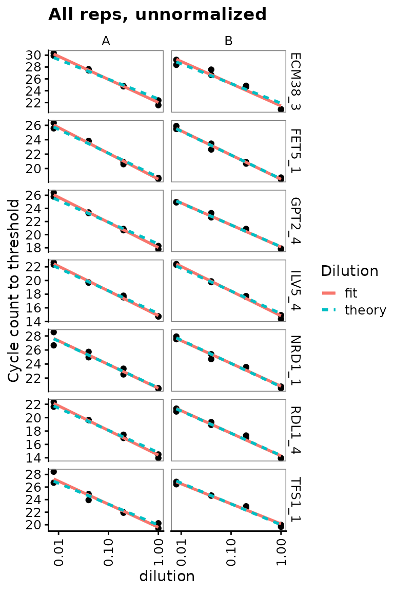

Primers and probes calibration vignette
Edward Wallace
April 2022
Source:vignettes/calibration_vignette.Rmd
calibration_vignette.RmdSummary: calibrating primer sets from a real experimental test
This vignette shows how to use tidyqpcr functions to calibrate qPCR probes.
This is real qPCR data by Edward Wallace in Feb 2019, testing new RT-qPCR primer sets against S. cerevisiae genes. We took exponential-phase total RNA previously extracted by Jamie Auxillos.
We tested 2-3 primer sets each for 7 genes:
- ECM38/YLR299W (3 primer sets)
- FET5/YFL041W (3 primer sets)
- GPT2/YKR067W
- ILV5/YLR355C
- NRD1/YNL251C
- RDL1/YOR285W
- TFS1/YLR178C
We started with two biological replicate RNA samples, treated with DNase and then split for a test sample with reverse transcriptase (RT) and negative control without reverse transcriptase (-RT). We also took a no template (NT) negative control. For each RT reaction we do serial 5x dilutions down to 125x to form a quantitative calibration curve.
The data were measured on a Roche LC480 instrument in a single 384-well plate. Quantification was performed in the Roche LightCycler software prior to exporting the data.
Setup knitr options and load packages
# knitr options for report generation
knitr::opts_chunk$set(
warning = FALSE, message = FALSE, echo = TRUE, cache = FALSE,
results = "show"
)
# Load packages
library(tidyr)
library(ggplot2)
library(dplyr)
library(tidyqpcr)
# set default theme for graphics
theme_set(theme_bw(base_size = 11) %+replace%
theme(
strip.background = element_blank(),
panel.grid = element_blank()
))Set up experiment
Describe which primer set we put in which well using a row key
In this experiment, each primer set was in a different row of the 384-well plate. We describe this by creating a row key, a data frame describing the rows of the plate, the primer sets, and the genes that they detect.
We refer to each primer set as a target_id, because each
primer set has a different target amplicon, on a different location in a
gene. tidyqpcr insists on having a variable called
target_id that uniquely identifies each different target
that you detect.
# Names of target genes
gene_name_levels <- c("ECM38", "FET5", "GPT2", "ILV5", "NRD1", "RDL1", "TFS1")
# ORF ids of target genes
target_levels <- c("YLR299W", "YFL041W", "YKR067W", "YLR355C",
"YNL251C", "YOR285W", "YLR178C")
# Repeats of gene names to account for testing multiple primer sets
gene_name_values <- c(rep(gene_name_levels[1:2], each = 3),
rep(gene_name_levels[3:7], each = 2))
# id numbers of multiple probesets (reflecting IDs as ordered)
target_id_levels <- paste(gene_name_values,
c(1, 2, 3, 1, 3, 4, 1, 4, 1, 4, 1, 2, 4, 5, 1, 5),
sep = "_"
)
rowkey <- tibble(
well_row = LETTERS[1:16],
gene_name = factor(gene_name_values, levels = gene_name_levels),
target_id = factor(target_id_levels, levels = target_id_levels)
)
print(rowkey)## # A tibble: 16 × 3
## well_row gene_name target_id
## <chr> <fct> <fct>
## 1 A ECM38 ECM38_1
## 2 B ECM38 ECM38_2
## 3 C ECM38 ECM38_3
## 4 D FET5 FET5_1
## 5 E FET5 FET5_3
## 6 F FET5 FET5_4
## 7 G GPT2 GPT2_1
## 8 H GPT2 GPT2_4
## 9 I ILV5 ILV5_1
## 10 J ILV5 ILV5_4
## 11 K NRD1 NRD1_1
## 12 L NRD1 NRD1_2
## 13 M RDL1 RDL1_4
## 14 N RDL1 RDL1_5
## 15 O TFS1 TFS1_1
## 16 P TFS1 TFS1_5Combine the row key describing primer sets with column key describing on samples and dilutions.
We use a default design built in to tidyqpcr,
create_colkey_4diln_2ctrl_in_24.
plate1plan <-
label_plate_rowcol(
create_blank_plate(),
rowkey,
create_colkey_4diln_2ctrl_in_24()
) %>%
mutate(sample_id = paste(biol_rep, dilution_nice, sep = "_"))Spot-check the plate plan
Checks that for selected technical replicate/probe/dilution combinations, the plate contains the right number of replicates.
## # A tibble: 2 × 11
## well well_row well_col dilution dilution_nice prep_type biol_rep tech_rep
## <chr> <fct> <fct> <dbl> <chr> <fct> <fct> <fct>
## 1 A1 A 1 1 1x +RT A 1
## 2 A13 A 13 1 1x +RT B 1
## # … with 3 more variables: gene_name <fct>, target_id <fct>, sample_id <chr>## # A tibble: 12 × 11
## well well_row well_col dilution dilution_nice prep_type biol_rep tech_rep
## <chr> <fct> <fct> <dbl> <chr> <fct> <fct> <fct>
## 1 D7 D 7 1 1x +RT A 2
## 2 D8 D 8 0.2 5x +RT A 2
## 3 D9 D 9 0.04 25x +RT A 2
## 4 D10 D 10 0.008 125x +RT A 2
## 5 D11 D 11 1 -RT -RT A 2
## 6 D12 D 12 1 NT NT A 2
## 7 D19 D 19 1 1x +RT B 2
## 8 D20 D 20 0.2 5x +RT B 2
## 9 D21 D 21 0.04 25x +RT B 2
## 10 D22 D 22 0.008 125x +RT B 2
## 11 D23 D 23 1 -RT -RT B 2
## 12 D24 D 24 1 NT NT B 2
## # … with 3 more variables: gene_name <fct>, target_id <fct>, sample_id <chr>Display the plate plan
This can be printed out to facilitate loading the plate correctly.
display_plate_qpcr(plate1plan)
Analyse Cq (quantification cycle count) data
Load and summarize data
# NOTE: system.file() accesses data from this R package
# To use your own data, remove the call to system.file(),
# instead pass your data's filename to read_lightcycler_1colour_cq()
# or to another relevant read_ function
file_path_cq <- system.file("extdata",
"Edward_qPCR_Nrd1_calibration_2019-02-02_Cq.txt.gz",
package = "tidyqpcr")
plates <-
file_path_cq %>%
read_lightcycler_1colour_cq() %>%
right_join(plate1plan, by = "well")
plates## # A tibble: 384 × 18
## include color well sample_info cq concentration standard status well_row
## <lgl> <int> <chr> <chr> <dbl> <dbl> <int> <lgl> <fct>
## 1 TRUE 255 A1 Sample 1 22.8 NA 0 NA A
## 2 TRUE 255 A2 Sample 2 24.7 NA 0 NA A
## 3 TRUE 255 A3 Sample 3 26.8 NA 0 NA A
## 4 TRUE 255 A4 Sample 4 28.6 NA 0 NA A
## 5 TRUE 65280 A5 Sample 5 NA NA 0 NA A
## 6 TRUE 65280 A6 Sample 6 NA NA 0 NA A
## 7 TRUE 255 A7 Sample 7 23.2 NA 0 NA A
## 8 TRUE 255 A8 Sample 8 24.8 NA 0 NA A
## 9 TRUE 255 A9 Sample 9 26.9 NA 0 NA A
## 10 TRUE 65280 A10 Sample 10 NA NA 0 NA A
## # … with 374 more rows, and 9 more variables: well_col <fct>, dilution <dbl>,
## # dilution_nice <chr>, prep_type <fct>, biol_rep <fct>, tech_rep <fct>,
## # gene_name <fct>, target_id <fct>, sample_id <chr>
summary(plates)## include color well sample_info
## Mode:logical Min. : 255 Length:384 Length:384
## TRUE:384 1st Qu.: 255 Class :character Class :character
## Median : 255 Mode :character Mode :character
## Mean :18035
## 3rd Qu.:65280
## Max. :65280
##
## cq concentration standard status well_row
## Min. :13.89 Min. : NA Min. :0 Mode:logical A : 24
## 1st Qu.:20.55 1st Qu.: NA 1st Qu.:0 NA's:384 B : 24
## Median :23.44 Median : NA Median :0 C : 24
## Mean :23.63 Mean :NaN Mean :0 D : 24
## 3rd Qu.:26.68 3rd Qu.: NA 3rd Qu.:0 E : 24
## Max. :36.77 Max. : NA Max. :0 F : 24
## NA's :105 NA's :384 (Other):240
## well_col dilution dilution_nice prep_type biol_rep tech_rep
## 1 : 16 Min. :0.0080 Length:384 +RT:256 A:192 1:192
## 2 : 16 1st Qu.:0.0400 Class :character -RT: 64 B:192 2:192
## 3 : 16 Median :0.6000 Mode :character NT : 64
## 4 : 16 Mean :0.5413
## 5 : 16 3rd Qu.:1.0000
## 6 : 16 Max. :1.0000
## (Other):288
## gene_name target_id sample_id
## ECM38:72 ECM38_1: 24 Length:384
## FET5 :72 ECM38_2: 24 Class :character
## GPT2 :48 ECM38_3: 24 Mode :character
## ILV5 :48 FET5_1 : 24
## NRD1 :48 FET5_3 : 24
## RDL1 :48 FET5_4 : 24
## TFS1 :48 (Other):240Visualise Cq values for each well.
Visualising the Cq values shows that the Cq value is different for
each primer set in each row. Within each section of a row for a single
replicate of dilutions, Cq consistently increases with dilutions as
expected. The grey tiles for most -RT and NT columns mean that the value
is NA, i.e. no Cq value was reported. This is good.
display_plate_value(plates)
Visualisation might also help to identify unwanted positional effects. For example, a PCR machine is broken, wells close to an edge of the plate can have different behaviour from central wells.
Plot unnormalized data shows that -RT and NT controls are low
This plot visualises the Cq data in a way that highlights the meaning instead of the position on the plate. Again, it shows that the Cq value is different for each primer set, and that for each primer st Cq consistently increases with dilutions as expected.
Again, we detect no signal in NT (no template) negative control so those points are mostly missing. There is a very weak signal with high Cq in some -RT (no reverse transcriptase) negative controls.
ggplot(data = plates) +
geom_point(aes(x = target_id,
y = cq,
colour = dilution_nice,
shape = prep_type),
position = position_jitter(width = 0.2, height = 0)
) +
labs(
y = "Cycle count to threshold",
title = "All reps, unnormalized"
) +
facet_wrap(~biol_rep) +
scale_y_continuous(breaks = seq(from = 15, to = 35, by = 5)) +
theme(axis.text.x = element_text(angle = 90, vjust = 0.5),
panel.grid.major.y = element_line(colour="grey80", size = 0.2))
Dilution series is linear for all probes
Visual display of linearity of cq with log(dilution).
ggplot(data = filter(plates, prep_type == "+RT"), aes(x = dilution, y = cq)) +
geom_point() +
stat_smooth(
formula = y ~ x, method = "lm", se = FALSE,
aes(colour = "fit", linetype = "fit")
) +
stat_smooth(
formula = y ~ 1 + offset(-x * log(10) / log(2)), method = "lm", se = FALSE,
aes(colour = "theory", linetype = "theory")
) +
scale_x_log10(breaks = 10 ^ - (0:3)) +
scale_y_continuous(breaks = seq(0, 30, 2)) +
labs(
y = "Cycle count to threshold",
title = "All reps, unnormalized",
colour = "Dilution", linetype = "Dilution"
) +
facet_grid(target_id ~ biol_rep, scales = "free_y") +
theme(axis.text.x = element_text(angle = 90, vjust = 0.5))Calculate primer efficiencies for all probes
Use regression to estimate linearity of cq with log(dilution), including the slope or efficiency.
calculate_efficiency_bytargetid(plates)## # A tibble: 16 × 4
## target_id efficiency efficiency.sd r.squared
## <fct> <dbl> <dbl> <dbl>
## 1 ECM38_1 0.923 0.0480 0.970
## 2 ECM38_2 0.958 0.0429 0.975
## 3 ECM38_3 1.15 0.0524 0.974
## 4 FET5_1 1.05 0.0317 0.988
## 5 FET5_3 1.09 0.0507 0.973
## 6 FET5_4 1.09 0.0413 0.982
## 7 GPT2_1 1.14 0.0601 0.965
## 8 GPT2_4 1.08 0.0345 0.987
## 9 ILV5_1 1.04 0.0222 0.994
## 10 ILV5_4 1.09 0.0239 0.994
## 11 NRD1_1 0.998 0.0498 0.969
## 12 NRD1_2 1.08 0.0423 0.981
## 13 RDL1_4 1.06 0.0386 0.983
## 14 RDL1_5 1.03 0.0327 0.987
## 15 TFS1_1 1.03 0.0551 0.964
## 16 TFS1_5 1.18 0.0544 0.973Dilution series for nice probes only shows linearity clearly
target_id_levels_niceprobes <-
c("ECM38_3", "FET5_1", "GPT2_4", "ILV5_4",
"NRD1_1", "RDL1_4", "TFS1_1")
ggplot(
data = filter(plates,
prep_type == "+RT",
target_id %in% target_id_levels_niceprobes),
aes(x = dilution, y = cq)
) +
geom_point() +
stat_smooth(
formula = y ~ x, method = "lm", se = FALSE,
aes(colour = "fit", linetype = "fit")
) +
stat_smooth(
formula = y ~ 1 + offset(-x * log(10) / log(2)),
method = "lm",
se = FALSE,
aes(colour = "theory", linetype = "theory")
) +
scale_x_log10(breaks = 10 ^ - (0:3)) +
scale_y_continuous(breaks = seq(0, 30, 2)) +
labs(
y = "Cycle count to threshold",
title = "All reps, unnormalized",
colour = "Dilution", linetype = "Dilution"
) +
facet_grid(target_id ~ biol_rep, scales = "free_y") +
theme(axis.text.x = element_text(angle = 90, vjust = 0.5))
Analyse amplification and melt curve data
Load raw data for amplification and melt curves.
# NOTE: system.file() accesses data from this R package
# To use your own data, remove the call to system.file(),
# instead pass your data's filename to read_lightcycler_1colour_cq()
# or to another relevant read_ function
file_path_raw <- system.file("extdata/Edward_qPCR_Nrd1_calibration_2019-02-02.txt.gz",
package = "tidyqpcr")
plate1curve <- file_path_raw %>%
read_lightcycler_1colour_raw() %>%
debaseline() %>%
left_join(plate1plan, by = "well")
# amplification curve is program 2
platesamp <- plate1curve %>%
filter(program_no == 2)
# melt curve is program 3 or 4, depending on cycler setting
platesmelt <- plate1curve %>%
filter(program_no == 3) %>%
calculate_drdt_plate() %>%
filter(temperature >= 61)Plot all amplification curves
Broken up by technical replicate here, to avoid overplotting.
ggplot(
data = platesamp %>%
filter(tech_rep == "1"),
aes(x = cycle,
y = fluor_signal,
colour = factor(dilution),
linetype = prep_type)
) +
facet_grid(target_id ~ biol_rep, scales = "free_y") +
scale_linetype_manual(values = c("+RT" = "solid",
"-RT" = "dashed",
"NT" = "dotted")) +
geom_line() +
scale_x_continuous(breaks = seq(60, 100, 10),
minor_breaks = seq(60, 100, 5)) +
labs(title = "All Amp Curves, tech_rep A")
ggplot(
data = platesamp %>%
filter(tech_rep == "2"),
aes(x = cycle,
y = fluor_signal,
colour = factor(dilution),
linetype = prep_type)
) +
facet_grid(target_id ~ biol_rep, scales = "free_y") +
scale_linetype_manual(values = c("+RT" = "solid",
"-RT" = "dashed",
"NT" = "dotted")) +
geom_line() +
scale_x_continuous(breaks = seq(60, 100, 10),
minor_breaks = seq(60, 100, 5)) +
labs(title = "All Amp Curves, tech_rep B")Plot melt curve for single well
ggplot(
data = platesmelt %>%
filter(well == "A1"),
aes(x = temperature, y = dRdT)
) +
facet_wrap(~target_id) +
geom_line() +
scale_y_continuous(expand = c(0.02, 0.02))
Plot all melt curves
Again broken up by technical replicate.
ggplot(
data = platesmelt %>%
filter(tech_rep == "1"),
aes(x = temperature,
y = dRdT,
colour = factor(dilution),
linetype = prep_type)
) +
facet_grid(target_id ~ biol_rep, scales = "free_y") +
scale_linetype_manual(values = c("+RT" = "solid",
"-RT" = "dashed",
"NT" = "dotted")) +
geom_line() +
scale_x_continuous(breaks = seq(60, 100, 10),
minor_breaks = seq(60, 100, 5)) +
labs(title = "All Melt Curves, tech_rep A")
ggplot(
data = platesmelt %>%
filter(tech_rep == "2"),
aes(x = temperature,
y = dRdT,
colour = factor(dilution),
linetype = prep_type)
) +
facet_grid(target_id ~ biol_rep, scales = "free_y") +
scale_linetype_manual(values = c("+RT" = "solid",
"-RT" = "dashed",
"NT" = "dotted")) +
geom_line() +
scale_x_continuous(breaks = seq(60, 100, 10),
minor_breaks = seq(60, 100, 5)) +
labs(title = "All Melt Curves, tech_rep B")Plot zoomed melt curves
ggplot(
data = platesmelt %>%
filter(tech_rep == "1", prep_type == "+RT"),
aes(x = temperature, y = dRdT, colour = factor(dilution))
) +
facet_grid(target_id ~ biol_rep, scales = "free_y") +
geom_line() +
scale_x_continuous(
breaks = seq(60, 100, 5),
minor_breaks = seq(60, 100, 1),
limits = c(73, 87)
) +
labs(title = "Melt curves, zoomed, tech_rep A") +
theme(
panel.grid.major.x = element_line(colour = "grey50", size = 0.4),
panel.grid.minor.x = element_line(colour = "grey70", size = 0.1)
)
ggplot(
data = platesmelt %>%
filter(tech_rep == "2", prep_type == "+RT"),
aes(x = temperature, y = dRdT, colour = factor(dilution))
) +
facet_grid(target_id ~ biol_rep, scales = "free_y") +
geom_line() +
scale_x_continuous(
breaks = seq(60, 100, 5),
minor_breaks = seq(60, 100, 1),
limits = c(73, 87)
) +
labs(title = "Melt curves, zoomed, tech_rep B") +
theme(
panel.grid.major.x = element_line(colour = "grey50", size = 0.4),
panel.grid.minor.x = element_line(colour = "grey70", size = 0.1)
)
Plot only zoomed melt curves for nice probes
ggplot(
data = platesmelt %>%
filter(
tech_rep == "1",
prep_type == "+RT",
dilution_nice == "1x",
target_id %in% target_id_levels_niceprobes
),
aes(x = temperature, y = dRdT, colour = biol_rep)
) +
facet_grid(target_id ~ ., scales = "free_y") +
geom_line() +
scale_x_continuous(
breaks = seq(60, 100, 5),
minor_breaks = seq(60, 100, 1),
limits = c(73, 87)
) +
labs(title = "Nice probes, tech_rep A") +
theme(
panel.grid.major.x = element_line(colour = "grey50", size = 0.4),
panel.grid.minor.x = element_line(colour = "grey70", size = 0.1)
)